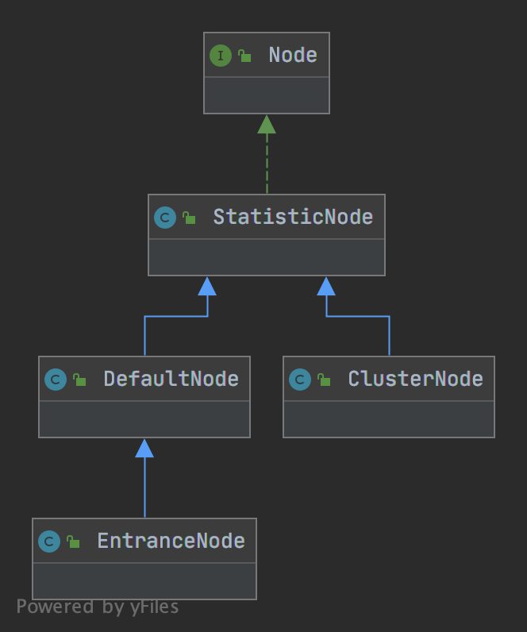
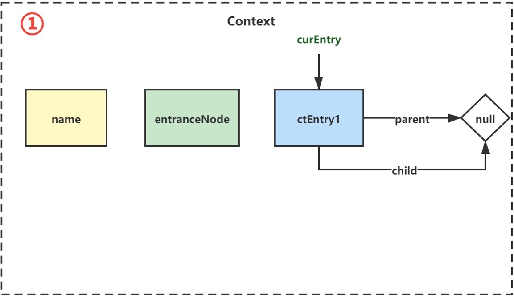
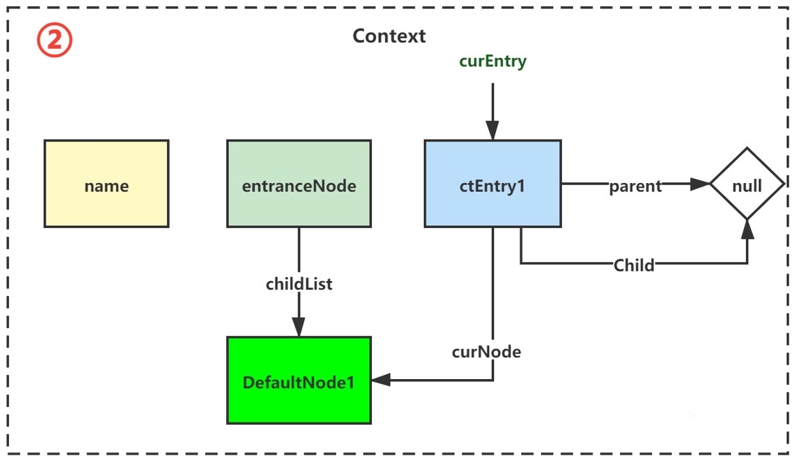
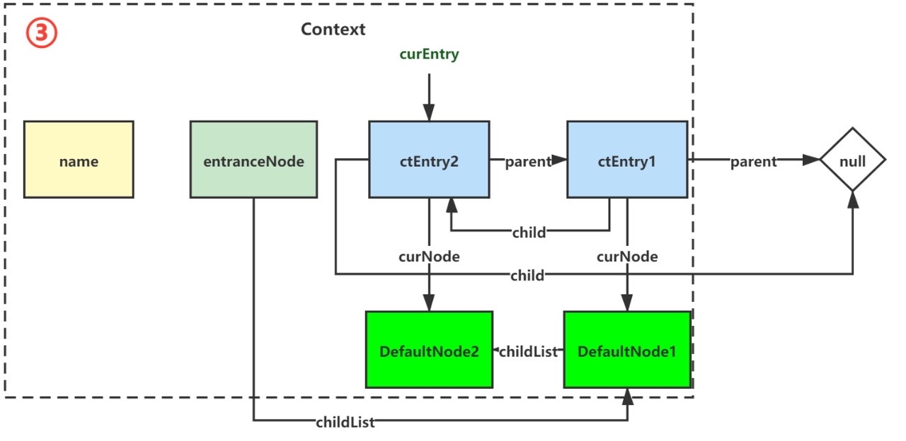

前文：
Sentinel源码阅读（一）
Sentinel源码阅读（二）
本来第三篇想写限流部分，但我意识到不论熔断还是限流等等都是建立在基础的数据统计之上，而这部分我还并没有详细的阅读，我的理解是建立在我已经拿到数据的基础上。这可能会对Sentinel的认识造成偏差，另外数据统计也是其重要组成部分，因此我决定先解析数据统计模块。
在第一篇中，我们提到了Sentinel的所有责任链节点：
com.alibaba.csp.sentinel.slots.nodeselector.NodeSelectorSlot
com.alibaba.csp.sentinel.slots.clusterbuilder.ClusterBuilderSlot
com.alibaba.csp.sentinel.slots.logger.LogSlot
com.alibaba.csp.sentinel.slots.statistic.StatisticSlot
com.alibaba.csp.sentinel.slots.block.authority.AuthoritySlot
com.alibaba.csp.sentinel.slots.system.SystemSlot
com.alibaba.csp.sentinel.slots.block.flow.FlowSlot
com.alibaba.csp.sentinel.slots.block.degrade.DegradeSlot
除去用于日志模块的LogSlot，最前三个Slot：NodeSelectorSlot、ClusterBuilderSlot与StatisticSlot，就是本文所要分析的部分。
不过在分析Slot前，我们先补充一下必要的概念。
Matric 表示指标，记录了被保护资源的基础统计信息（监控埋点）。
Matric中记录的信息包括：
success：执行成功数，除了被block的都算
maxSuccess：当前时间窗口的所有bucket中，最多的一个调用成功数（其实Matric接口没有描述含义，但其唯一实现类使用了上一篇讲到的LeapArray，从代码理解是这样子）
exception：调用异常数，注意这里的异常不包括Sentinel定义的异常，即BlockException与PriorityWaitException，即不包括黑名单、熔断降级、限流产生的异常
block：BlockException数，即黑名单、熔断降级、限流产生的异常
pass：调用通过的数量，没有抛任何异常，也没有occupied_pass的数量
occupied_pass：实际触发了限流，但由于设置的优先级高“借用”了下一个时间窗口，实际调用成功了，但会抛出PriorityWaitException异常，因此不会计入pass中
RT：response time，响应时间
可能有点绕，在下面StatisticSlot部分我会描述。
Matric唯一的实现类为ArrayMatric，ArrayMatric内部仅维护了一个LeapArray数组，元素类型是MetricBucket。
1 2 3 4 5 6 7 8 9 10 11 12 13 14 15 16 public class ArrayMetric implements Metric private final LeapArray<MetricBucket> data; public ArrayMetric (int sampleCount, int intervalInMs) this .data = new OccupiableBucketLeapArray(sampleCount, intervalInMs); } public ArrayMetric (int sampleCount, int intervalInMs, boolean enableOccupy) if (enableOccupy) { this .data = new OccupiableBucketLeapArray(sampleCount, intervalInMs); } else { this .data = new BucketLeapArray(sampleCount, intervalInMs); } } }
LeapArray上一篇讲到过，就是滑动窗口，在ArrayMetric构造函数中，有两种实例化的类型。BucketLeapArray仅是包了一层，不再赘述，而OccupiableBucketLeapArray还额外维护了一个用于统计未来一段时间窗口的borrowArray，这是为了重要业务不被直接限流而先sleep一段时间落到新窗口上，即“借用”。具体在下一篇限流中再详细说明。
MetricBucket中维护了两个东西：
Node Node的概念在Sentinel中很常见，第一个NodeSelectorSlot也与之有关，Node是一个接口，官方文档对其进行了定性。
Holds real-time statistics for resources.
Node在Sentinel中就是一个指标的Holder，承载了上节Metric统计信息、线程数，并具有计算qps等方法。类图如下：

可知StatisticNode为其基础的实现类，其他三个Node根据需要重写了部分方法。
StatisticNode StatisticNode中，维护了两个ArrayMatric和一个线程计数器。分别为窗口为1s，桶数为2的秒级窗口，与窗口为1分钟，桶数为60的分钟级窗口。
1 2 3 4 5 public class StatisticNode implements Node private transient volatile Metric rollingCounterInSecond = new ArrayMetric(2 , 1000 ); private transient Metric rollingCounterInMinute = new ArrayMetric(60 , 60 * 1000 , false ); private LongAdder curThreadNum = new LongAdder(); }
有了前面ArrayMatric与LeapArray的基础，StatisticNode具体的实现就不讲了，就是对窗口的操作，有兴趣可以自己去了解细节。
DefaultNode 1 2 3 4 5 public class DefaultNode extends StatisticNode private ResourceWrapper id; private volatile Set<Node> childList = new HashSet<>(); private ClusterNode clusterNode; }
DefaultNode中有三个变量。分别是id，即与资源相关联，一个子Node列表，一个ClusterNode（实际在EntranceNode中使用）。
从之后的代码可知，DefaultNode就表示一个context（线程）中的一个资源，毕竟有id。而子Node列表与ClusterNode，在下几节会说明。
其重写的方法皆为调用父类方法后，额外调用一次clusterNode的同名方法。
EntranceNode EntranceNode人如其名，就表示入口的Node，查看其构造函数调用方法，都是用默认资源名构造的，没有实际含义。仅代表一次调用的入口。一个Context会对应一个EntranceNode。其子Node列表则会使用第一个进入的DefaultNode。
其重写的方法皆为由统计当前Node成为所有子Node数据的平均值。
从构造函数调用看，只有EntranceNode会传入非null的ClusterNode。
ClusterNode ClusterNode中持有一个name和resourceType，就是资源ResourceWrapper中的两个值，具体我们在ClusterBuilderSlot会讲。
NodeSelectorSlot 终于来到了第一个节点。在第一篇文章中，我们讲述了一个基本的demo，仅有一个资源。但实际的情况错综复杂，如何处理多个资源共同存在的情况，使其正常工作，就是NodeSelectorSlot负责的功能。它会负责收集资源的路径，并将这些资源的调用路径，以树状结构存储起来，用于根据调用路径来限流降级。
具体方式是，首先全局存在一个名为machine-root的EntranceNode。每次有线程进来（或者显式调用相关方法）执行对资源的调用，会创建对应的Context，同时生成一个EntranceNode作为调用链的起点。

之后进入NodeSelectorSlot的entry方法：
1 2 3 4 5 6 7 8 9 10 11 12 13 14 15 16 17 DefaultNode node = map.get(context.getName()); if (node == null ) { synchronized (this ) { node = map.get(context.getName()); if (node == null ) { node = new DefaultNode(resourceWrapper, null ); HashMap<String, DefaultNode> cacheMap = new HashMap<String, DefaultNode>(map.size()); cacheMap.putAll(map); cacheMap.put(context.getName(), node); map = cacheMap; ((DefaultNode) context.getLastNode()).addChild(node); } } } context.setCurNode(node);
又是双重检查锁，会根据资源标识生成DefaultNode，挂在context的最后一个DefaultNode（若无则为EntranceNode）再将当前节点设为自己。

如果再来一个，则会变成：

这样，一次调用链上多资源的节点树就构成了。
ClusterBuilderSlot Context是线程相关的，如果我们有需要做线程无关的统计，该怎么办呢？这就是ClusterBuilderSlot的职责。
1 2 3 4 5 6 7 8 9 10 11 12 13 14 15 16 17 18 19 20 21 22 23 24 25 26 27 28 29 30 @Override public void entry (Context context, ResourceWrapper resourceWrapper, DefaultNode node, int count, boolean prioritized, Object... args) throws Throwable { if (clusterNode == null ) { synchronized (lock) { if (clusterNode == null ) { clusterNode = new ClusterNode(resourceWrapper.getName(), resourceWrapper.getResourceType()); HashMap<ResourceWrapper, ClusterNode> newMap = new HashMap<>(Math.max(clusterNodeMap.size(), 16 )); newMap.putAll(clusterNodeMap); newMap.put(node.getId(), clusterNode); clusterNodeMap = newMap; } } } node.setClusterNode(clusterNode); if (!"" .equals(context.getOrigin())) { Node originNode = node.getClusterNode().getOrCreateOriginNode(context.getOrigin()); context.getCurEntry().setOriginNode(originNode); } fireEntry(context, resourceWrapper, node, count, prioritized, args); }
其实很简单，slot内部维护了一个ResourceWrapper到ClusterNode的map，对每个资源的DefaultNode，如果没有对应的ClusterNode则创建一个并set，否则从map取并set。下面还有一段逻辑用于设置originNode，它的类型是StatisticNode，一般为appName，主要用法我还不清楚，这里就不讨论了。
所以我们看到，ClusterNode是完全与Context无关的，即使多个context中有相同的resource，也只有一个对应的ClusterNode。因此我们可以统计某个资源在所有线程的信息。在之后的限流部分会用到。
总结一下：
一个调用链（Context）关联一个EntranceNode 每个Context中的一个资源关联一个DefaultNode 所有Context中同名的资源关联一个ClusterNode
StatisticSlot 这个slot非常重要，因此我们把整个代码都贴上来（除部分重复代码）。
1 2 3 4 5 6 7 8 9 10 11 12 13 14 15 16 17 18 19 20 21 22 23 24 25 26 27 28 29 30 31 32 33 34 35 36 37 38 39 40 41 42 43 44 45 46 47 48 49 50 51 52 53 54 55 56 57 58 59 60 61 62 63 64 65 66 67 68 69 70 71 72 73 74 75 76 77 78 79 80 81 82 83 84 85 86 87 88 89 90 91 92 93 94 95 96 @Spi(order = Constants.ORDER_STATISTIC_SLOT) public class StatisticSlot extends AbstractLinkedProcessorSlot <DefaultNode > @Override public void entry (Context context, ResourceWrapper resourceWrapper, DefaultNode node, int count, boolean prioritized, Object... args) throws Throwable try { fireEntry(context, resourceWrapper, node, count, prioritized, args); node.increaseThreadNum(); node.addPassRequest(count); if (context.getCurEntry().getOriginNode() != null ) { context.getCurEntry().getOriginNode().increaseThreadNum(); context.getCurEntry().getOriginNode().addPassRequest(count); } if (resourceWrapper.getEntryType() == EntryType.IN) { Constants.ENTRY_NODE.increaseThreadNum(); Constants.ENTRY_NODE.addPassRequest(count); } for (ProcessorSlotEntryCallback<DefaultNode> handler : StatisticSlotCallbackRegistry.getEntryCallbacks()) { handler.onPass(context, resourceWrapper, node, count, args); } } catch (PriorityWaitException ex) { node.increaseThreadNum(); ... } catch (BlockException e) { context.getCurEntry().setBlockError(e); node.increaseBlockQps(count); ... throw e; } catch (Throwable e) { context.getCurEntry().setError(e); throw e; } } @Override public void exit (Context context, ResourceWrapper resourceWrapper, int count, Object... args) Node node = context.getCurNode(); if (context.getCurEntry().getBlockError() == null ) { long completeStatTime = TimeUtil.currentTimeMillis(); context.getCurEntry().setCompleteTimestamp(completeStatTime); long rt = completeStatTime - context.getCurEntry().getCreateTimestamp(); Throwable error = context.getCurEntry().getError(); recordCompleteFor(node, count, rt, error); recordCompleteFor(context.getCurEntry().getOriginNode(), count, rt, error); if (resourceWrapper.getEntryType() == EntryType.IN) { recordCompleteFor(Constants.ENTRY_NODE, count, rt, error); } } Collection<ProcessorSlotExitCallback> exitCallbacks = StatisticSlotCallbackRegistry.getExitCallbacks(); for (ProcessorSlotExitCallback handler : exitCallbacks) { handler.onExit(context, resourceWrapper, count, args); } fireExit(context, resourceWrapper, count); } private void recordCompleteFor (Node node, int batchCount, long rt, Throwable error) if (node == null ) { return ; } node.addRtAndSuccess(rt, batchCount); node.decreaseThreadNum(); if (error != null && !(error instanceof BlockException)) { node.increaseExceptionQps(batchCount); } } }
小结 至此，Sentinel核心的数据统计流程我们已经讲完了，结合上文的断路器如何拿信息，我想你可以更好的理解。下一篇，我们会解析剩余的部分，限流、黑白名单、系统规则、隔离规则实现。